EE 274 Digital Signal Processing 1 Lab Activity 1
Name: Paul Vincent S. Nonat
Contents
A. Signal Generation
In this exercise, you will demonstrate your coding skills in MATLAB by generating the following signals:
- [y,n] = impseq(n0,a,b)
- [y,n] = stepseq(n0,a,b)
- [y,n] = sigadd(x1,n1,x2,n2)
- [y,n] = sigmult(x1,n1,x2,n2)
- [y,n] = sigshift(x1,n1,n0)
- [y,n] = sigfold(x1,n1)
- [xe,xo,n] = evenodd(x1,n1)
- Demo of impseq function [y,n] = impseq(n0,a,b)
[y,n] = impseq(3,0,5) figure stem (n,y) title('A.1. Unit-Impulse Sequence') xlabel('n') ylabel('x(n)')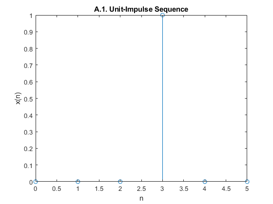
- Demo of Unit-step sequence function [y,n] = stepseq(n0,a,b)
[y,n] = stepseq(3,0,5) figure stem(n,y) title('A.2. Unit-step Sequence') xlabel('n') ylabel('x(n)')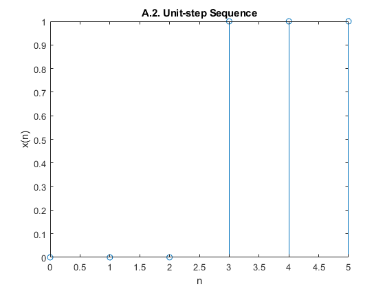
- Demo of addition of two sequence [y,n] = sigadd(x1,n1,x2,n2)
[y1,n1] = impseq(3,0,5) %generate impulse sequence [y2,n2] = stepseq(3,0,5) %generate unit-step sequence [y,n] = sigadd(y1,n1,y2,n2) % add the unit step and unit impulse sequence figure stem(n,y) title('A.3 Addition of Two Sequence') ylabel('y = x1(n1)+ x2(n2)') xlabel('n')
y2 = 1×6 logical array ...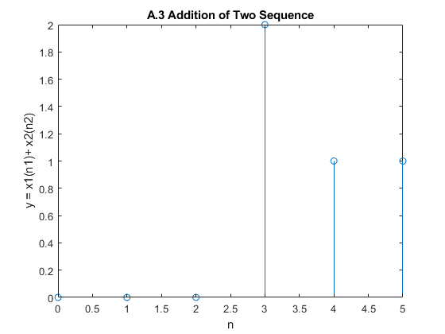
- Demo of multiplication of two sequence [y,n] = sigmult(x1,n1,x2,n2)
[y1,n1] = impseq(3,0,5) %generate impulse sequence [y2,n2] = stepseq(3,0,5) %generate unit-step sequence [y,n] = sigmult(y1,n1,y2,n2) % add the unit step and unit impulse sequence figure stem(n,y) title('A.4 Multiplication of Two Sequence') ylabel('y = x1(n1)* x2(n2)') xlabel('n')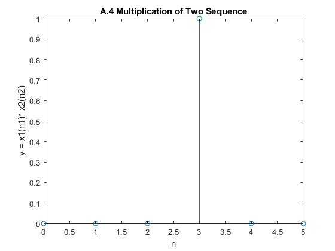
- Demo of signal shifting [y,n] = sigshift(x1,n1,n0)
[y1,n1] = impseq(3,0,5) % generate impulse sequence [y,n] = sigshift(y1,n1,1) % shift impulse sequence by 1 figure stem(n,y) title('A.5 Shifting Operation on a Sequence') ylabel('x[n-n0]') xlabel('n')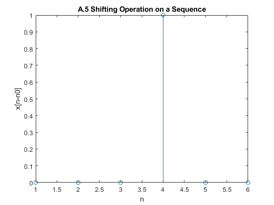
- Demo of signal folding [y,n] = sigfold(x1,n1)
[y1,n1] = stepseq(3,0,5) [y,n]= sigfold(y1,n1) figure stem(n,y) title('A.6 Folding operation on a sequence') ylabel('FD[x(n)]') xlabel('n')
y1 = 1×6 logical array ...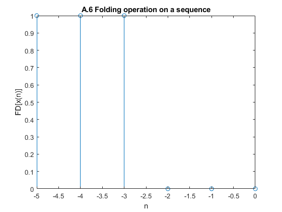
- Demo of odd even signal decomposition [xe,xo,m] = evenodd(x,n)
[y1,n1] = impseq(3,0,5) %generate impulse sequence [y2,n2] = stepseq(3,0,5) %generate unit-step sequence [y,n] = sigmult(y1,n1,y2,n2) % add the unit step and unit impulse sequence [xe,xo,m] = evenodd(y,n) subplot(311) stem(n,y) title('Original') subplot(312) stem(m,xe) title('Even Part') subplot(313) stem(m,xo) title('Odd Part')
y2 = 1×6 logical array ...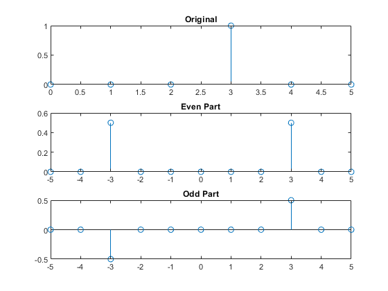
B. SIGNAL REPRESENTATION
Generate and Plot the following signals. You may use your functions in Part A.
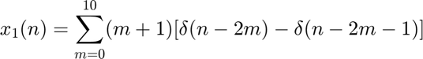
y=0 N=25 nn=0:N for n =0:N for m =0:10 temp=(m+1) .*( impseq(n-2*m,0,N) - impseq(n-(2*m)-1,0,N)) y=y+temp end end figure stem(nn,y) xlabel('n') title('$x_1(n) = \sum_{m=0}^{10}(m+1)[\delta(n-2m) - \delta(n-2m-1)]$','interpreter','latex')
y =
0
...
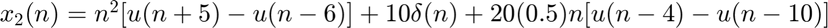
y=0 N=25 nn=0:N for n=0:25 temp = n^2 .* (stepseq(n+5,0,N) - stepseq(n-6,0,N)) + (10 .* impseq(n,0,N)) + 20*(0.5)^n .*(stepseq(n-4,0,N) - stepseq(n-1,0,N)) y=y+temp end figure stem(nn,y) xlabel('n') title('$x_2(n) = n^2[ u(n+5) - u(n-6)] + 10\delta(n) +20(0.5)n[u(n-4)-u(n-10)]$','interpreter','latex')
y =
0
...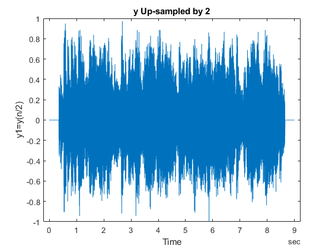 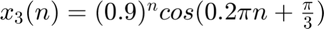
N=20 n = 0:N; x0 = 0.9; x = (0.9^L)*cos(0.2*pi*n+(pi/3)); stem(n,x) xlabel('n') title(' $x_3(n)= (0.9)^n cos(0.2\pi n + \frac{\pi}{3})$','interpreter','latex')
N =
20
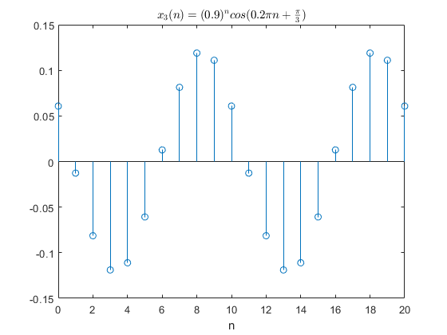 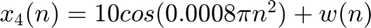
N=100 n=0:N; x0=10; w = -1+2*rand(1,N+1); x =(x0*cos(0.0008*pi*(n.^2))) + w stem(n,x) xlabel('n') title(' $x_4(n) = 10cos(0.0008\pi n^2) + w(n)$','interpreter','latex')
N = 100 ...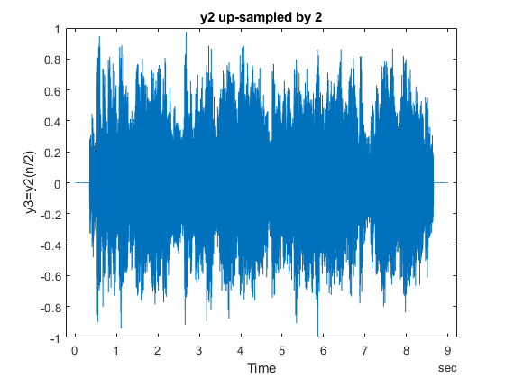
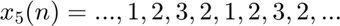
%N=20 % %y,n] = stepseq(0,0,2)
C. Sampling
%Sampling is done by periodically obtaining samples from a continuous time %signal. The period also known as the sampling period is the reciprocal of %sampling frequency $F_s$. Using up-sampling and down-sampling, information %can be added or removed from a discrete time signal. % % # Load *signal1.wave* file in your workspace % # Using *[y,fs] = audioread()*, import the audio and sampling rate % information in your workspace. % [y,fs]=audioread('signal1.wav'); info=audioinfo('signal1.wav'); t = 0:seconds(1/fs):seconds(info.Duration); t = t(1:end-1); plot(t,y) title('Original Audio') xlabel('Time') ylabel('Audio Signal') soundsc(y,fs)
%y up-sampled by 2 M=2 y1= upsample(y,M) t1 = 0:seconds(1/(M*fs)):seconds(info.Duration); t1 = t1(1:end-1); figure plot(t1,y1) title('y Up-sampled by 2') xlabel('Time') ylabel('y1=y(n/2)') soundsc(y1,fs)
M =
2
...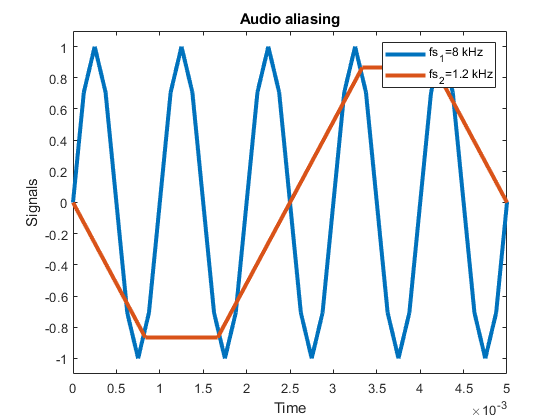 %y down-sampled by 2 M=2 y2= downsample(y,M) t2 = 0:seconds(1/(fs/M)):seconds(info.Duration); t2 = t2(1:end-1); figure plot(t2,y2) title('y down-sampled by 2') xlabel('Time') ylabel('y2=y(2n)') soundsc(y2,fs)
M =
2
...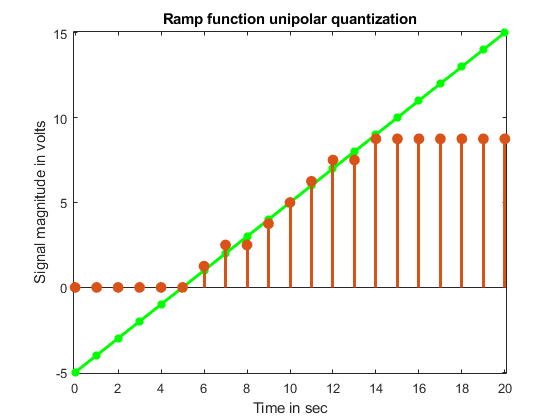 %y2 up-sampled by 2 M=2 y3 = upsample(y2,M) t3 = 0:seconds(1/fs):seconds(info.Duration); t3 = t3(1:end-1); figure plot(t3,y3) title('y2 up-sampled by 2') xlabel('Time') ylabel('y3=y2(n/2)') soundsc(y3,fs)
M =
2
... %y3, up-sampled by 2 M=2 y4 = upsample(y3,M) t4 = 0:seconds(1/(fs*M)):seconds(info.Duration); t4 = t4(1:end-1); figure plot(t4,y4) title('y3 up-sampled by 2') xlabel('Time') ylabel('y4=y3(n/2)') soundsc(y4,fs) %yes however some information will be loss as the upsampler cannot predict %the value inbetween the downsampled signales. In effect, there are loss %information in the upsampled signals $y_3$ and $y_4$.
M =
2
... D. Aliasing
The following exercise investigates the effect of improper sampling.
- Generate two 1 kHz sine signals (2 seconds duration), first signal at 8 kHz sample frequency and second signal at 1.2 kHz sample frequency
- On the same graph, use the plot function to display the two signals versus t in the range 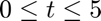 msec.
- Listen to the two signals one after another using the function soundsc (x, fs);
- Compare the two signals. How does the sampling rate affect the digitized sound?
T = 2; %parameters f0 = 1000; % 1kHz sine signal fs1 = 8000; % Sampling frequencies fs2 = 1200; [x1, t1] = sin_NU(fs1,f0,T); % sine signal sampled at fs1 [x2, t2] = sin_NU(fs2,f0,T); % sine signal sampled at fs2 figure; plot(t1,x1,t2,x2,'LineWidth',3.0), axis([0, 0.005, -1.1, 1.1]) legend('fs_1=8 kHz','fs_2=1.2 kHz') xlabel('Time') ylabel('Signals') title('Audio aliasing');
soundsc(x1,fs1)
soundsc(x2,fs2)
based from observation, the sine wave sampled at 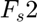 does not completely recovered the original sine wave at $f_o =1$kHz as compared to 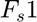 with frequency lower than 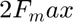, which leads to aliasing.
E. Quantization
%Quantization is done by replacing each value of an analog signal $x(t)$ by %the value of the nearest quantization level. To exemplify this oepration, %let's simulate a unipolar ADC (Analog to Digital Converter) having the %technical specifications: R= 10 Volts (full-scale range) and B = 3(number %of bits). % % # Write a MATLAB function y=adc_uni(x,R,B) where x and y are vectors % containing the input signal and the quantized signal, respectively. % # Test your function with an input ramp signal ranging from -5 to 15 % Volts (1 volt per step). % # On the same graph, use the plot and stem functions to display the input % signal and quantized signal respectively.
adc_uni function test
R = 10; B = 3; x = -5:15; y = adc_uni(x,R,B); t = 0:length(x)-1; figure(11) plot(t,x,t,y) plot(t,x,'g-*','LineWidth',2.2) hold on stem(t,y,'filled','LineWidth',2.2) hold off title('Ramp function unipolar quantization') xlabel('Time in sec') ylabel('Signal magnitude in volts') axis([-0.1,20.1,-5.1,15.1])
function y = adc_uni(x, R, B) level = [0:R/(2^B):R-R/(2^B)]; temp = [-Inf,(level(2:end)-R/(2^(B+1))),Inf]; i=1 y=(x >= temp(i)).*(x < temp(i+1)).*level(i) for i = 2:length(level) y = y + (x >= temp(i)).*(x < temp(i+1)).*level(i); end end
i =
1
... function [x, t] = sin_NU(fs, f0, T) %function to generate sine signal t = 0:1/fs:T; %the signal vector output x = sin(2*pi*f0*t); %the time vector output end
function [x,n]=impseq(n0,a,b) % Generates x(n)= delta(n-n0); a<=n<=b n=[a:b]; x=[(n-n0)==0]; end
y = 1×6 logical array ...
y1 = 1×6 logical array ...
y1 = 1×6 logical array ...
y1 = 1×6 logical array ...
y1 = 1×6 logical array ...
temp = Columns 1 through 13 ...
[y,n] = stepseq(n0,a,b)
function [x,n]=stepseq(n0,a,b) % Generates x(n)= u(n-n0); a<=n<=b n=[a:b]; x=[(n-n0)>=0]; end
y = 1×6 logical array ...
y2 = 1×6 logical array ...
[y,n] = sigadd(x1,n1,x2,n2)
function [y,n]=sigadd(x1,n1,x2,n2) n=min(min(n1),min(n2)): max(max(n1),max(n2)); y1=zeros(1,length(n)); y2=y1; y1(find((n>=min(n1))&(n<=max(n1))==1))=x1; y2(find((n>=min(n2))&(n<=max(n2))==1))=x2; y=y1+y2; end
y =
0 0 0 2 1 1
...[y,n] = sigmult(x1,n1,x2,n2)
function [y,n] = sigmult(x1,n1,x2,n2) % implements y(n) = x1(n)*x2(n) n = min(min(n1),min(n2)):max(max(n1),max(n2)); % duration of y(n) y1 = zeros(1,length(n)); y2 = y1; % y1(find((n>=min(n1))&(n<=max(n1))==1))=x1; % x1 with duration of y y2(find((n>=min(n2))&(n<=max(n2))==1))=x2; % x2 with duration of y y = y1 .* y2; % sequence multiplication end
y =
0 0 0 1 0 0
...
y =
0 0 0 1 0 0
...function [y,n] = sigshift(x,n1,n0) % implements y(n) = x(n-n0) n = n1+n0; y = x; end
y = 1×6 logical array ...
function [y,n] = sigfold(x,n) % implements y(n) = x(-n) % ----------------------- % [y,n] = sigfold(x,n) % y = fliplr(x); n = -fliplr(n); end
y = 1×6 logical array ...
odd even decomposition function
function [xe,xo,m] = evenodd(x,n) if any(imag(x)~=0) error('x is not real sequence ') end m = -fliplr(n); m1 = min([m,n]); m2 = max([m,n]); m = m1:m2; nm = n(1)-m(1); n1 = 1:length(n); x1 = zeros(1,length(m)); x1(n1+nm) = x; x = x1; xe = 0.5*(x+fliplr(x)); xo = 0.5*(x-fliplr(x)); end
xe = Columns 1 through 7 ...